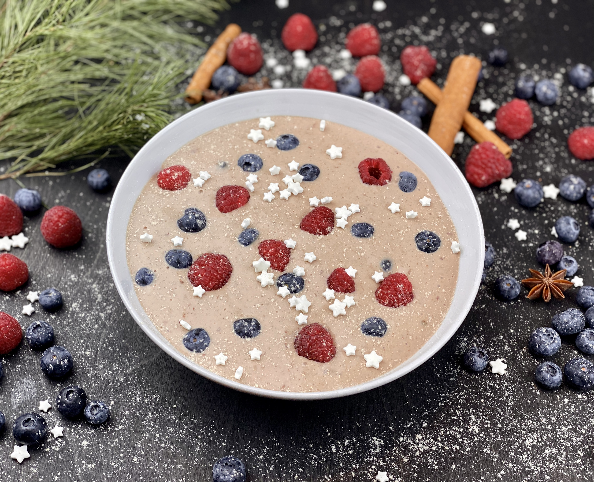
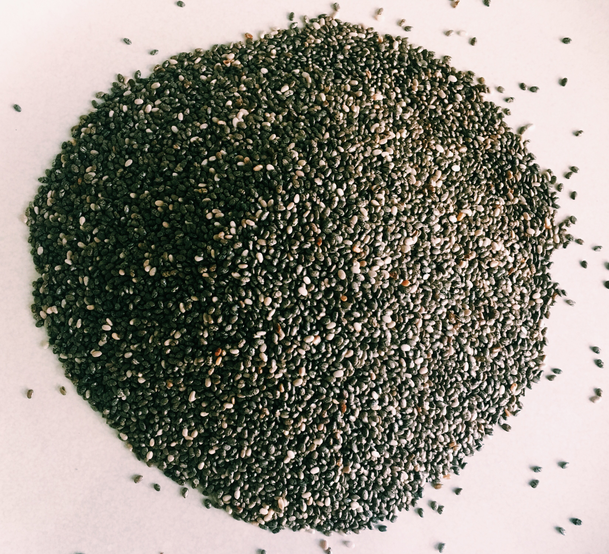
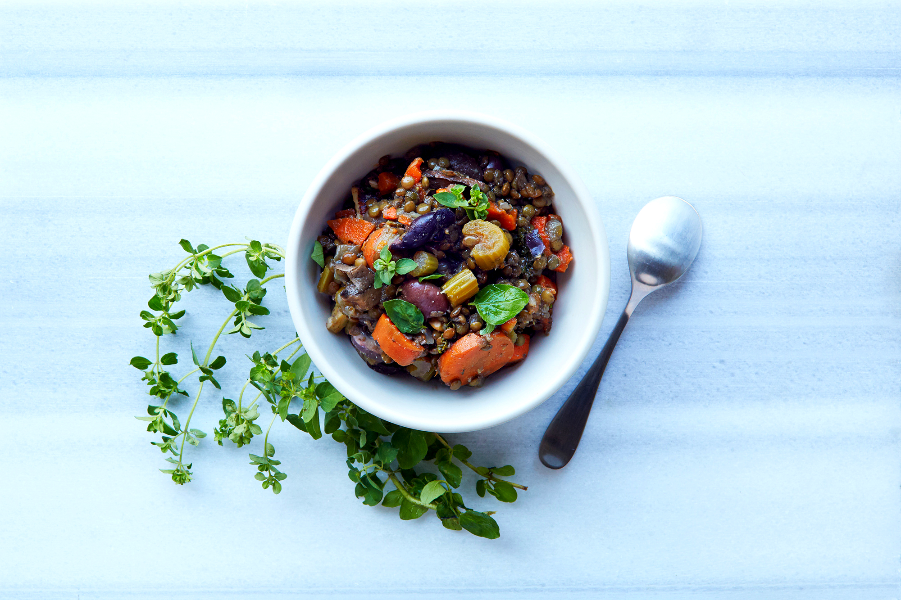
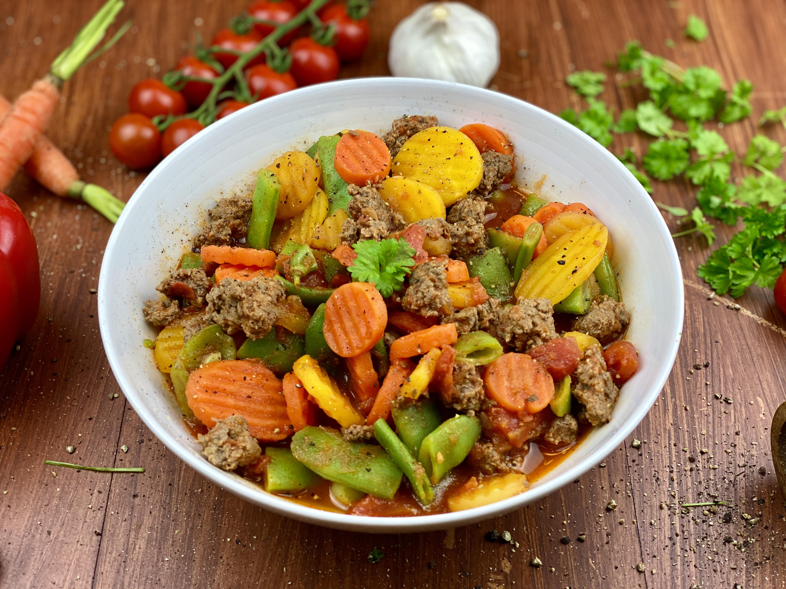

Marjat
Marjat tuovat ruokavalioon kuitua, rakennetta ja käytännössä helposti lisättävää laatua. Ne sopivat puuroon, jogurttiin, välipalaan ja arjen kuitupohjan vahvistamiseen.
Kova harjoittelu rakentaa suunnan, mutta ravinto antaa keholle materiaalit, energian ja biologisen tuen, joilla suorituskyky todella nousee. Kun puhutaan jaksamisesta, imeytymisestä, suoliston toiminnasta ja pitkäjänteisestä kehityksestä, ruokavalio on koko järjestelmän perusta.
Urheilussa onnistuminen ei synny vain tahdosta, kurinalaisuudesta tai harjoitusmäärästä. Keho tarvitsee joka päivä oikeanlaista ravintoa, jotta se pystyy rakentamaan energiaa, säilyttämään tasaisen vireen, hyödyntämään harjoitusta ja toistamaan laadukasta tekemistä pitkällä aikavälillä.
Kun ihminen syö monipuolisesti, riittävästi ja tavoitteeseensa nähden viisaasti, harjoittelu tuntuu tasaisemmalta. Päivät pysyvät vakaampina, vatsan toiminta tukee oloa ja keho saa enemmän irti niistä aineista, joita ravinto tarjoaa.
Siksi ruokavalio ei ole urheilussa lisäosa. Se on koko käytännön toteutus siitä, kuinka paljon potentiaalista todella saadaan käyttöön.
Kuitu ei ole yksi asia. Se on joukko erilaisia rakenteita, jotka käyttäytyvät kehossa eri tavoin. Juuri tästä syystä urheilijan kannattaa rakentaa ruokavalioon useita kuitulähteitä eikä nojata vain yhteen ratkaisuun.
Liukoinen kuitu sitoo vettä ja muodostaa pehmeää rakennetta suolistossa. Se tukee kylläisyyttä, vatsan miellyttävää toimintaa ja tasaisempaa energian vapautumista.
Liukenematon kuitu lisää rakennetta ja auttaa ruokamassaa kulkemaan eteenpäin. Se tukee suoliston normaalia rytmiä ja arjen toimivuutta.
Osa kuiduista ruokkii suoliston hyvää toimintaympäristöä. Kun suoliston pohja voi hyvin, myös koko ravitsemuksellinen ketju toimii paremmin.
Kuitua ei tarvitse ajatella vain ravintotaulukon numerona. Se näkyy käytännössä siinä, mitä ihminen oikeasti syö päivittäin. Marjat, kaura, siemenet ja palkokasvit ovat erittäin hyviä esimerkkejä lähteistä, joilla kuidun määrää ja laatua voi nostaa selkeästi.
Marjat tuovat ruokavalioon kuitua, rakennetta ja käytännössä helposti lisättävää laatua. Ne sopivat puuroon, jogurttiin, välipalaan ja arjen kuitupohjan vahvistamiseen.

Kaura on erittäin käytännöllinen kuitulähde. Se sopii erityisen hyvin urheilulliseen arkeen, koska se on helppo, selkeä ja monelle vatsaystävällinen tapa nostaa kuidun saantia.

Siemenet tuovat ruokaan pientä mutta tehokasta lisärakennetta. Ne sopivat hyvin puuroon, jogurttiin, smoothien päälle ja osaksi monipuolista kuitukokonaisuutta.

Pavut ja linssit ovat erittäin vahvoja kuituruokia. Ne tuovat samalla ruokaan myös rakennetta, kylläisyyttä ja käytännöllistä ravitsemuksellista painoarvoa.

Kasvikset pitävät kuitupohjan leveänä. Mitä useammin lautasella näkyy erilaisia kasviksia, sitä helpommin kuidun saanti nousee laadukkaasti osaksi normaalia arkea.

Syöty ruoka ei hyödytä täysimääräisesti vain siksi, että se on lautasella. Kehon täytyy pystyä pilkkomaan, käsittelemään ja hyödyntämään ravintoa. Kun ruoansulatus toimii hyvin ja ruokavalio on rakennettu laadukkaista lähteistä, keho saa paremmat edellytykset hyödyntää energiaa, aminohappoja, rasvahappoja, vitamiineja ja kivennäisaineita.
Urheilijan tavoitteena ei ole vain syödä paljon tai syödä yleisesti terveellisesti. Tavoitteena on, että keho saa käyttöönsä juuri sitä, mitä se tarvitsee harjoittelun, palautumisen ja suorituskyvyn tueksi. Kun imeytymistä tukeva kokonaisuus toimii, ravitsemus tuntuu arjessa energiana, tasaisuutena, kylläisyytenä ja treenin kantavuutena.
Tämä aihe voidaan sanoa selkeästi näin: kehossa on vastaanottavia rakenteita, joita kutsutaan reseptoreiksi. Ne auttavat kehoa tunnistamaan erilaisia viestejä. Ravinto, energia, kylläisyys, verensokerin säätely ja monet muut biologiset tapahtumat kulkevat osittain tämän viestinnän kautta.
Reseptorit ovat kuin kehon omia tunnistuspisteitä. Ne eivät ole erillinen temppu, vaan osa sitä järjestelmää, jonka avulla keho käsittelee informaatiota. Kun ravitsemus on tasapainoinen, monipuolinen ja tavoitteeseen sopiva, myös kehon sisäinen viestintäympäristö saa paremmat olosuhteet toimia.
Urheilusuoritus ei ole pelkkää lihastyötä. Se on myös hermoston, energiankäytön, palautumisen ja koko biologisen yhteispelin tulos. Siksi ravitsemus on enemmän kuin kaloreita. Se on biologinen signaali, joka vaikuttaa siihen, millaisessa tilassa keho toimii päivästä toiseen.
Mitä korkeammalle ihminen haluaa nousta, sitä tarkemmin ravitsemuksen täytyy palvella tavoitetta. Tämä ei tarkoita jäykkyyttä. Tämä tarkoittaa korkeaa laatua, tarkoituksellisuutta ja päivittäistä rakennetta, joka antaa keholle parhaat mahdolliset olosuhteet onnistua.
Korkea taso ei synny yhdestä hyvästä viikosta. Se syntyy kuukausista ja vuosista, joissa keho saa jatkuvasti oikeanlaista tukea. Siksi ruokavalio on niin vahva avain onnistumiseen.
Kyllä. Kuitu tukee vatsan toimintaa, ruokavalion laatua ja tasaisempaa arkea. Eri kuidut tuovat tähän eri vahvuuksia.
Koska ravinnon arvo näkyy lopulta siinä, kuinka hyvin keho pystyy hyödyntämään sen. Tämä tekee suoliston toiminnasta ja ruokavalion laadusta käytännössä erittäin merkittäviä.
Ne ovat osa kehon viestintää. Ravinto ei ole vain polttoainetta, vaan myös biologinen viesti, joka tukee energiaa, kylläisyyttä, palautumista ja toiminnan laatua.
Jos ihminen tavoittelee korkeaa urheilullista tasoa, ruokavalion on oltava suunniteltu tukemaan sitä tasoa. Tämä tekee ravitsemuksesta tärkeimmän päivittäisen avaimen pitkäjänteiseen onnistumiseen.